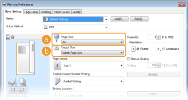
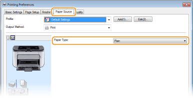
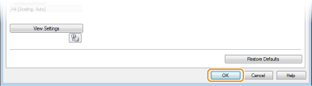

Basic Print Operations
This section explains how to print a document on your computer by using the printer driver.

1
Open a document in an application and display the print dialog box.
How to display the print dialog box differs for each application. For more information, see the instruction manual for the application you are using.
2
Select this machine and click [Preferences] or [Properties].

The screen that is displayed differs depending on the application you are using.
3
Set the paper size.

 [Page Size]
[Page Size]Select the size that you used when you created the document in the application.
 [Output Size]
[Output Size]Select the paper size to be used in the actual printing. If you select a size that differs from [Page Size], the printer driver will automatically enlarge or reduce the data to match the [Output Size]. Enlarging or Reducing
4
In the [Paper Source] tab, select the paper type.
Set [Paper Type] according to the type of paper to be used in the printing. Paper Type and Printer Driver Paper Settings

5
Set other printing preferences as necessary. Various Print Settings

You can register the settings you specified in this step as a "profile" and use the profile whenever you print. This eliminates the need to specify the same settings every time you print. Registering Combinations of Frequently Used Print Settings
6
Click [OK].

7
Click [Print] or [OK].

 |
Printing starts. On some applications, a screen like the one shown below appears.
 If a screen like the one shown above appears, you can cancel printing by clicking [Cancel]. If the screen disappears or is never displayed, you can cancel printing in other ways. Canceling Print Jobs
|
 |
If you become dirty from the toner of printed sheets or if toner comes off the pageIf you use paper with a coarse surface or cloth becomes dirty from toner, set [Paper Type] to [Rough 1] (16.0 to 23.9 lb Bond [60 to 90 g/m²]) or [Rough 2] (24.0 lb Bond to 60.3 lb Cover [91 to 163 g/m²]).
Do not touch printed pages. Do not touch newly printed sheets with your fingers or a cloth. You may get your fingers or the cloth dirty, and the toner may come off the page.
|
 |
When printing from a Windows Store app in Windows 8/Server 2012Display the charms on the right side of the screen, and proceed as follows.
Windows 8/Server 2012
Tap or click [Devices] Windows 8.1/Server 2012 R2
Tap or click [Devices] When you print in this way, you can only use some of the print settings.
If the message <The printer requires your attention. Go to the desktop to take care of it.> is displayed, go to your desktop and follow the instructions in the dialog box on the screen. This message is displayed when you need to enter your user name before printing, or when there is some other setting that requires your attention.
|